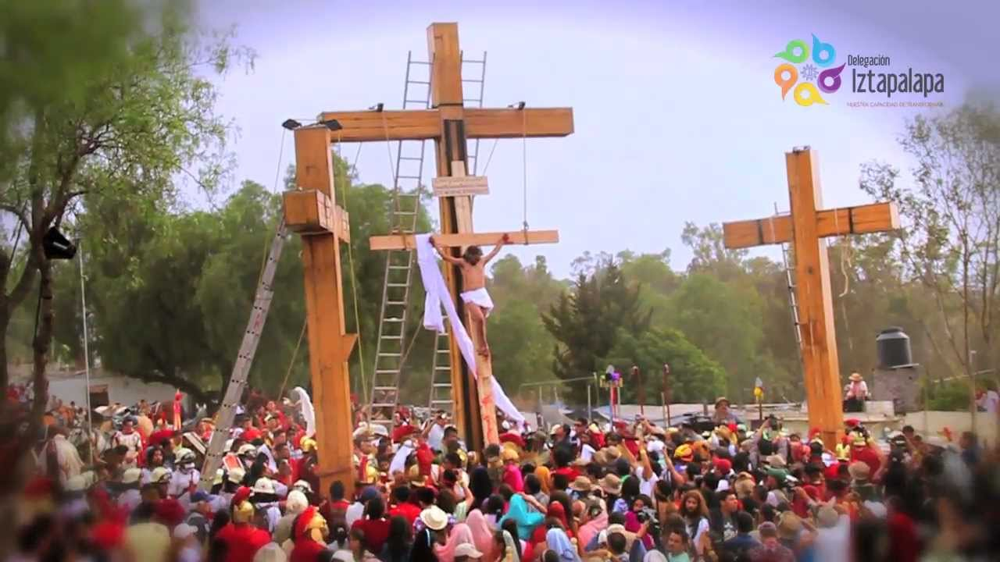

concepto
La Semana Santa es la conmemoración anual cristiana de la Pasión, Muerte y Resurrección de Jesús de Nazaret. Por eso, es un período de intensa actividad litúrgica dentro de las diversas confesiones cristianas. Da comienzo el Domingo de Ramos y finaliza el Domingo de Resurrección.
Los días más importantes de la Semana Santa son los formados por el llamado Triduo Pascual
Gonzalez Varela Juan Pablo
Religiones que celebran la Semana Santa
Catolicos
La Semana Mayor para los católicos es la época en la que se recuerda y celebra los hechos más relevantes en la vida de Jesús de Nazaret (la Pasión, Muerte y Resurrección), comenzando con el llamado Domingo de Ramos y finalizando el Domingo de Resurrección o también llamado de Pascua.
Cristianos evangélicos
Para la iglesia cristiana, la Semana Santa es el tiempo para recordar la muerte de Cristo. Para conmemorarla, se congregan en una jornada de oración y adoración, la cual inicia el Jueves Santo a las 9:00 de la noche y se extiende por 24 horas..
Testigos de Jehová
De acuerdo con su tradición, la única acción que Jesús mandó a conmemorar en esta fecha es la última cena; por esto, la comunidad se reúne en el Salón del Reino para recordar esta acción, reflexionar sobre ella y el significado de la muerte y resurrección de Jesús, como rey mas no como Dios todopoderoso.
Gonzalez Varela Juan Pablo
Semana Santa en Atlixco
Vía Crucis de Atlixco, en el estado de Puebla, en México, reúne desde hace más de un siglo en Semana Santa a un grupo de penitentes capaces de traspasar el umbral del dolor por su devoción, al salir en procesión encapuchados y descalzos, con grilletes y coronas de espinas.
Gonzalez Varela Juan Pablo
Iztalapa
Iztapalapa, una de las 16 delegaciones que constituyen el Distrito Federal el Domingo de Ramos las casas y las calles se llenan de flores, las campanas se echan a vuelo, y un ángel con un niño inician la procesión que avanza lentamente

Gonzalez Varela Juan Pablo
San Luis Potosi
En todo San Luis Potosí se organizan un buen número de eventos culturales y religiosos para conmemorar la Semana Santa, desde turismo religioso y cultural, como el espectáculo de la Fiesta de la Luz, museos e iglesias, hasta turismo de aventura. Sin embargo, el evento más importante y de mayor tradición entre los lugareños tiene lugar el Viernes Santo, cuando se realiza la Procesión del Silencio
Gonzalez Varela Juan Pablo
Guerrero
Uno de los atractivos turísticos más importantes que tiene el estado de Guerrero es la celebración de la Semana Santa en Taxco, ceremonia litúrgica conmovedora e impresionante, única en toda la República Mexicana.
Gonzalez Varela Juan Pablo